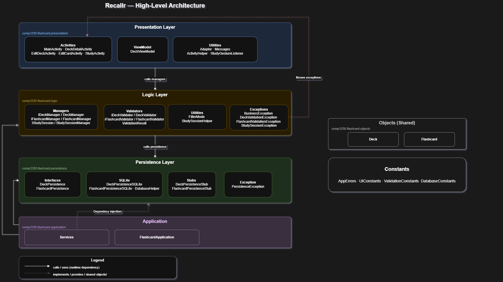
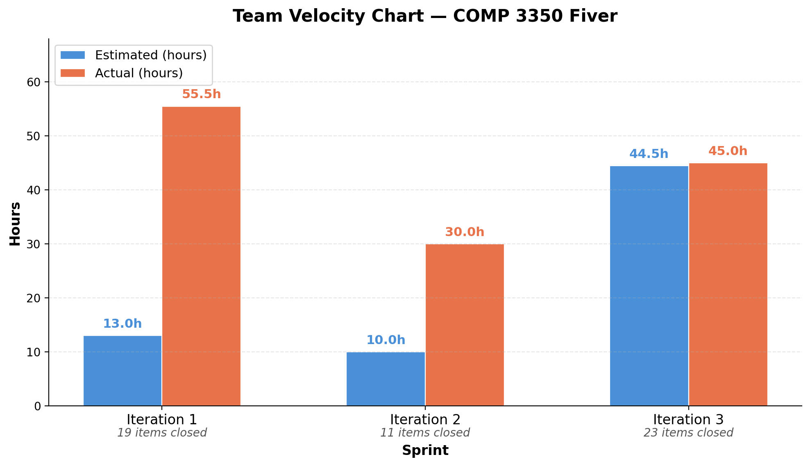

COMP 3350 — A01 Group 05
A focused flashcard study tool that turns passive reading into active recall.
Watch DemoRecallr is a focused study tool that allows students to create customizable flashcards to help them efficiently learn and review study material.
Recallr encourages active recall and efficient study sessions by letting users create, organize, and review flashcard sets across a wide range of subjects. The system stores decks, tracks learning progress through review sessions, and maintains a history of which cards users have mastered.
Traditional methods often promote passive re-reading, which results in poor memory retention. Recallr addresses this by centering the study experience around active recall, repetition, and immediate feedback.
Create, rename, and delete custom study decks. Each deck holds an unlimited number of flashcards and tracks the last time you studied it.
Add, update, and remove individual cards within any deck. Cards store front & back text and a mastery flag that persists across sessions.
Study sessions shuffle cards at random so you never fall into a predictable order, keeping your recall sharp and unpredictable.
Choose to study All cards, only Known ones for a quick review, or focus exclusively on Unknown cards that need more work.
Cards you mark as unknown are automatically re-queued within the same session so you keep seeing them until you've nailed them.
A real-time progress bar shows how far through a session you are. Mastery status persists to the database so you can pick up exactly where you left off.
The walkthrough below covers the primary user flows: creating a deck, adding flashcards, filtering a study session by mastery level, and tracking progress through to completion.
Recallr is built on a strict three-tier layered architecture: Presentation → Logic → Data. Dependencies flow downward only; no layer reaches upward.

Layer dependency diagram (Iteration 3)
Android Activities handle all user input and display. They call the Logic layer for every operation and contain zero business logic or direct database calls.
Pure Java — no Android SDK dependency. Contains all business rules, validators, session state, and custom exceptions.
Interface-driven persistence with two implementations switched via dependency injection - no code changes needed to swap them.
Recallr was developed by a four-person team over three two-week iterations. All members contributed across layers; the focus areas below reflect each person's deepest involvement and skills gained.
Technical skills gained:
Technical skills gained:
Technical skills gained:
Technical skills gained:
The most significant weakness identified across our iterations
was the inconsistent placement of validation logic and poor
domain-object encapsulation. Beginning in Iteration 1,
validation rules for Flashcard and
Deck were spread across multiple layers, including
domain objects, the logic layer and even the presentation layer,
rather than being centralized.
Domain objects also exposed fields that should have been managed internally, violating encapsulation principles (flagged in the post-Iteration 1 review, Issue #47). These issues were known after Iteration 1 but were deferred to allow the team to finish features first. Tracked issues (#50, #69) were created to ensure nothing was forgotten.
validators/ package was created in the logic
layer, with separate validator classes for
Deck and Flashcard.
| Metric | Iteration 2 | Iteration 3 |
|---|---|---|
| SOLID Violations | 15+ identified | 0 critical violations |
| Validation Code Duplication | 3 layers, 8+ files | Single validator classes |
| Magic Numbers | 12+ hard-coded values | All centralized as constants |
| Public Setters on Immutable Fields | 6 violations (setId, setCreatedAt) | 0 violations |
| Factory Method Adoption | Fields exposed at construction | Package-private constructors + factory methods |

Story-point velocity per iteration
The Iteration 0 vision described a clean layered app with study sessions, mastery tracking, and progress indicators. The final product delivers all of those, but the path was more iterative than the original plan implied.
Iteration 1 established the skeleton: domain objects, stub
persistence, and basic CRUD activities. Iteration 2 expanded
features (study sessions, filter modes, gesture-based flipping)
and introduced the DeckValidationException, but
accumulated technical debt. Iteration 3 was deliberately a
refactoring sprint: new features were minimal while the team paid
down all tracked debt, centralized validation, and tightened
encapsulation.
The result is a codebase whose architecture closely matches the original diagram, something not guaranteed in iterative development. The lesson: tracking debt as real issues, not informal notes, was the practice that made it possible to pay it back on schedule.
Met in person and discussed during class. Worked well during the planning-heavy early phase when schedules were lighter and programming hadn't started. We spent more time on planning and exploring ideas.
Shifted to online meetings as schedules filled up. Attempted daily standups, which intially helped the team to keep updated. Later on, there were inconsistencies in terms of staying updated with other team members work.
This time we started with a solid plan. Based on meetings, we assigned gitlab issues earlier and maintained regular communication. Main focus was code quality, addressing technical debts and good test coverage across all layers. For this reason moved earlier planned features to future milestone.
There is no one-size-fits-all communication strategy. Adapting our process to the team's evolving availability — rather than forcing a strict strategy. This helped us to maintain collaboration. Probably starting early could have helped us better to deal with the debt that we create as we go on.